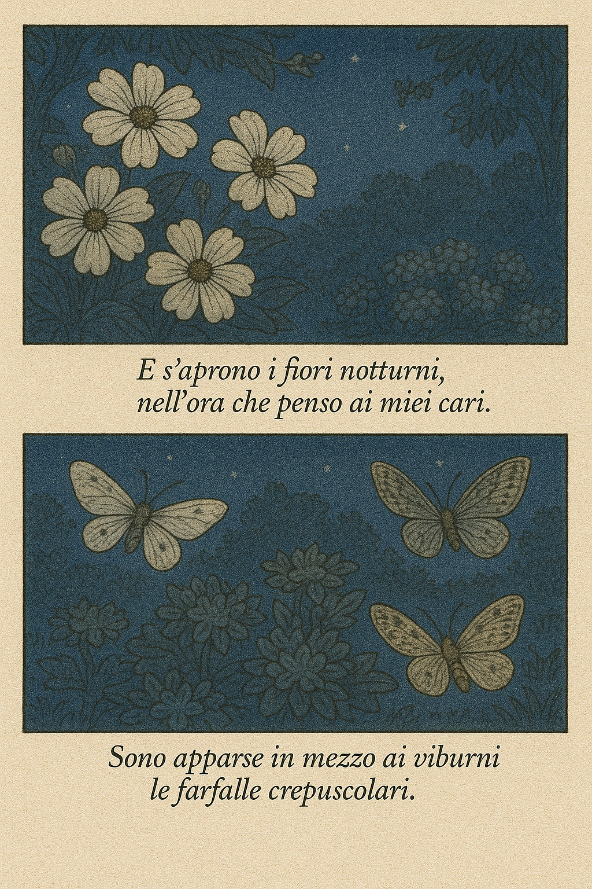
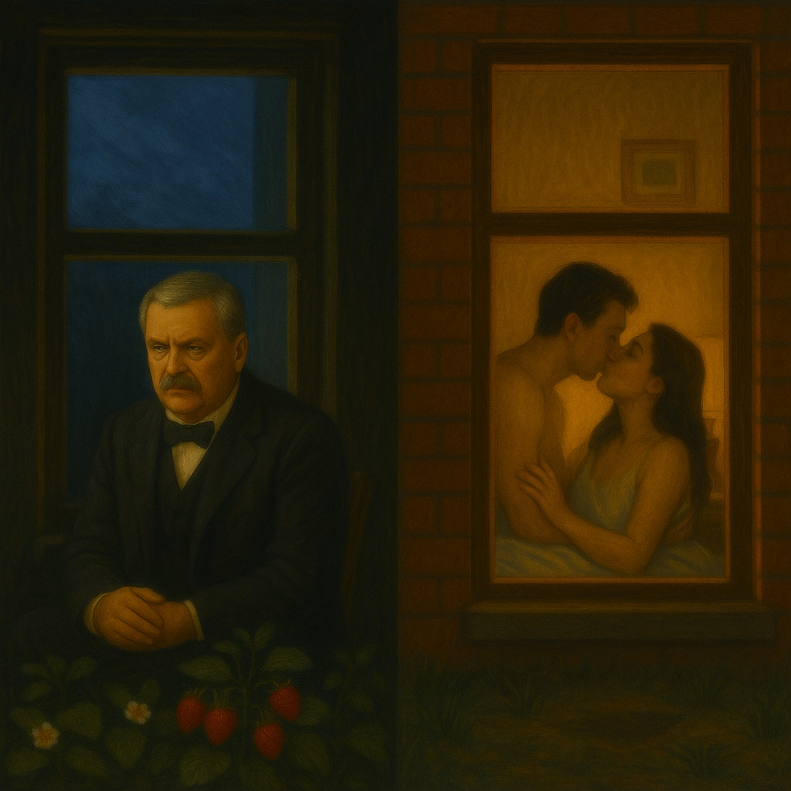

Strofa 1 – L’apertura della notte
E s’aprono i fiori notturni, / nell’ora che penso ai miei cari.
Sono apparse in mezzo ai viburni / le farfalle crepuscolari.


Il fiore notturno si apre proprio nel momento del ricordo dei defunti:
la natura non è sfondo, ma specchio della memoria. Le farfalle crepuscolari
sono immagini sospese tra vita e morte, tra giorno e notte.